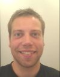
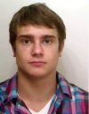
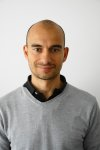
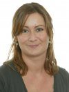
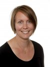
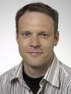
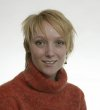
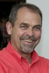
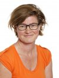
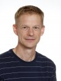

<div class="container">
  <div class="content">
    <h2>Authors</h2>
    <p>This homepage has been developed by:</p>
    <table width="470" border="0">
      <tr>
        <td width="108"></a></td>
        <td width="352" valign="top"><a href="https://www.linkedin.com/pub/steffen-falgreen-larsen/4a/a32/192" target="new"><h4>Steffen Falgreen, MSc, PhD</h4></a> 
Statistician <br /> Email: <a href="mailto:falgreen@me.com">falgreen@me.com</a> </td>
      </tr>
      
      <tr>
        <td width="108"></a></td>
        <td width="352" valign="top"><a href="https://dk.linkedin.com/pub/anders-ellern-bilgrau/66/879/3a9" target="new"><h4>Anders Ellern Bilgrau, MSc</h4></a>
PhD student&#160;/ Biostatistician <br /> Email:  <a href="mailto:abilgrau@math.aau.dk">abilgrau@math.aau.dk</a> </td>
      </tr>
      
      
            <tr>
        <td width="108"></a></a></td>
        <td width="352" valign="top"><a href="http://www.blodet.dk/index.php?overskrift-415118552138" target="new"><h4>Tarec Christoffer El-Galaly, MD</h4></a>
Staff specialist <br /> Email:  <a href="mailto:tarec.galaly@gmail.com">tarec.galaly@gmail.com</a> </td>
      </tr>
      
      <tr>
        <td width="108"></a></td>
        <td width="352" valign="top"><a href="https://dk.linkedin.com/pub/maria-bach-laursen/b0/b00/900" target="new"><h4>Maria Bach Laursen, MSc, PhD</h4></a>
Postdoc <br /> Email:  <a href="mailto:mabala@rn.dk">mabala@rn.dk</a> </td>
      </tr>
      
        <tr>
        <td width="108"></a></a></td>
        <td width="352" valign="top"> <a href="https://dk.linkedin.com/pub/julie-støve-bødker/11/a02/604" target="new"><h4>Julie S. Bødker, MSc, PhD</h4></a> 
Postdoc <br /> Email:  <a href="mailto:j.boedker@rn.dk">j.boedker@rn.dk</a> </td>
      </tr>
      
       <tr>
        <td width="108"></a></a></td>
        <td width="352" valign="top"> <a href="https://dk.linkedin.com/in/alexschmitz" target="new"><h4>Alexander Schmitz, MSc, PhD</h4></a>
Flow Cytometry Core Manager <br /> Email:  <a href="mailto:alex.schmitz@rn.dk">alex.schmitz@rn.dk</a> </td>
      </tr>
      
      <tr>
        <td width="108"></a></a></td>
        <td width="352" valign="top"> <a href="http://dk.linkedin.com/pub/malene-krag-kjeldsen/4/413/a0" target="new"><h4>Malene K. Kjeldsen, MSc, PhD</h4></a>
Postdoc <br /> Email:   <a href="mailto:makrp@rn.dk">makrp@rn.dk</a> </td>
      </tr>
  
        <tr>
        <td width="108"></a></a></td>
        <td width="352" valign="top">  <a href="https://dk.linkedin.com/pub/hans-e-johnsen/14/963/204" target="new"><h4>Hans E. Johnsen, MD, DMSc</h4></a> 
Professor, DMSc <br /> Email:    <a href="mailto:haej@rn.dk">haej@rn.dk</a> </td>
      </tr>    

        <tr>
        <td width="108"></a></a></td>
        <td width="352" valign="top">  <a href="https://dk.linkedin.com/pub/karen-dybkær/24/695/1b5" target="new"><h4>Karen Dybkær, MSc, PhD</h4></a> 
Professor MSO <br /> Email:   <a href="mailto:k.dybkaer@rn.dk">k.dybkaer@rn.dk</a> </td>
      </tr>    
      
              <tr>
        <td width="108"></a></a></td>
        <td width="352" valign="top">  <a href="http://dk.linkedin.com/in/mboegsted" target="new"><h4>Martin Bøgsted, MSc, PhD</h4></a>
Professor MSO <br /> Email:   <a href="mailto:martin.boegsted@rn.dk">martin.boegsted@rn.dk</a> </td>
      </tr>  
    </table>
   

    
    <h2>Department</h2>
   Forskningens Hus (Science and Innovation Center)<br />
Aalborg University Hospital<br />
Department of Haematology<br />
Sdr. Skovvej 15<br />
DK-9000 Aalborg<br />
DENMARK</p>
<p> Telephone: +45 97663864<br />
    Fax: +45 97666323<br />
E-mail: <a href="mailto:info@blodet.dk">info@blodet.dk</a><br />
www: <a href="www.blodet.dk" target="new">www.blodet.dk</a></p>

<p><iframe height="500" marginheight="0" src="http://maps.google.dk/maps?f=q&amp;source=s_q&amp;hl=da&amp;geocode=&amp;q=S%C3%B8ndre+Skovvej+15,+Aalborg&amp;aq=0&amp;oq=s%C3%B8ndre+skovvej+15&amp;sll=55.869147,11.228027&amp;sspn=5.519077,16.864014&amp;ie=UTF8&amp;hq=&amp;hnear=S%C3%B8ndre+Skovvej+15,+9000+Aalborg&amp;t=h&amp;ll=57.039843,9.904754&amp;spn=0.003502,0.006437&amp;z=16&amp;iwloc=A&amp;output=embed" frameborder="0" width="500" marginwidth="0" scrolling="no"></iframe><br />
&#160;</p>

  
  


  
  </div>
  <!-- end .container --></div>
</body>
